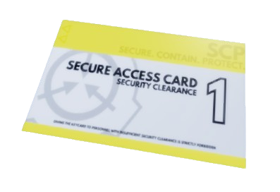

Overview
This section catalogs all known containment-related items and equipment used within SCP: Code Black facilities. Each entry includes its description, classification level, and associated departments.
1. Gas Mask
The Gas Mask is a protective gear that helps players breathe safely in areas filled with decontamination gas, such as lockrooms or gas catwalks. Normally, the gas makes your character cough and blink more often, making it harder to see and move around. Wearing the Gas Mask prevents these effects, letting you explore without trouble-though your vision will be a bit foggy or darker while using it.

2. Keycards
The keycards that exists around the site, are one of the most essential tools that serves as a way to acess secured doors equipped with keyboard scanners. They can be discovered in mutiple areas across the site, often hidden. Keycards are divided into six tiers, ranging from Security Clearance 1 up to Omni, each level granting access to restricted zones.
SCP Security Clearance Level-1
Where can I obtain this card?
- Dunno.
5. S-NAV
The S-NAV is designed to help players navigate and keep track of the rooms they've explored. Each square on the map represents a single room, giving a clear overview of your progress. There are three distinct variations of the S-NAV, each offering a unique way to visualize it.
S-NAV-300

The S-Nav 300 is the standard version of the S-NAV. It runs on a 9V battery, and if the battery is dead, the screen will display the message: “UNABLE TO CONNECT TO THE MAP DATABASE.” Rooms that havent been visited yet will remain hidden on the S-Nav 300.
Where can I obtain this item?
Security Notice
All items listed above are considered property of the Foundation. Unauthorized removal or replication of these materials is a direct violation of Code Black Directive 09-B.